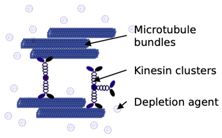
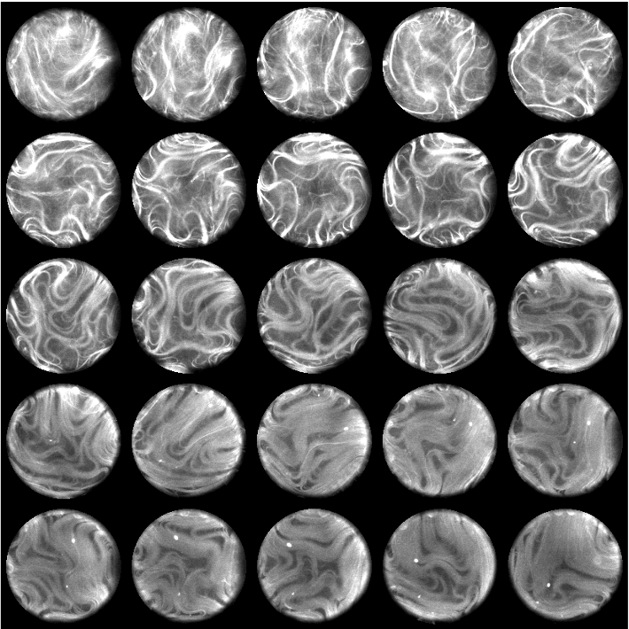
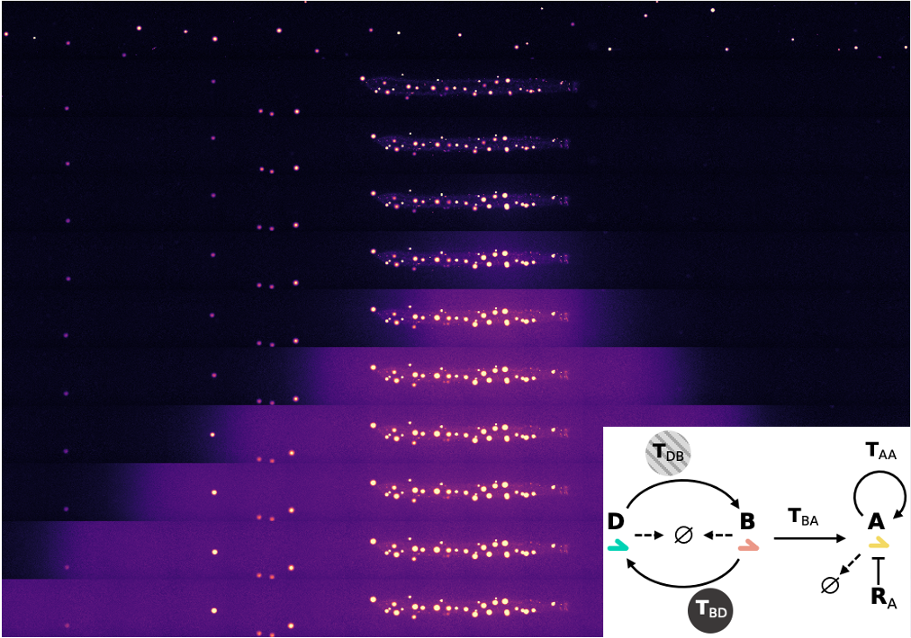
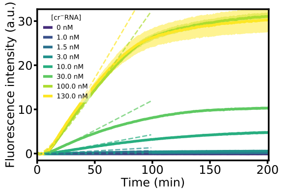
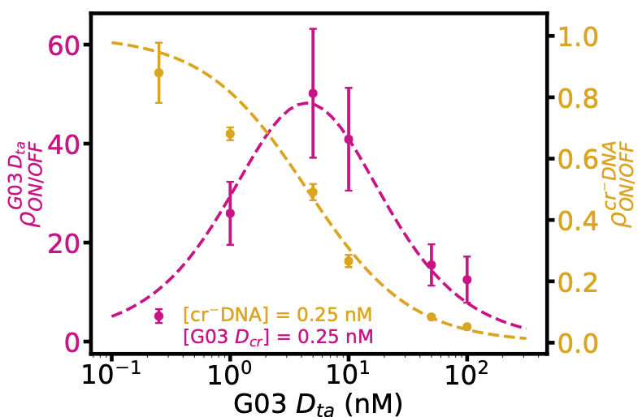

<!DOCTYPE HTML>
<script src="https://kit.fontawesome.com/167134ac73.js" crossorigin="anonymous"></script>
<script src="https://code.iconify.design/1/1.0.6/iconify.min.js"></script>


<html>
	<head>
		<title>Anis Senoussi</title>
		<meta charset="utf-8" />
		<meta name="viewport" content="width=device-width, initial-scale=1, user-scalable=no" />
		<link rel="stylesheet" href="code/css/main_2.css" />
	</head>
	<body class="is-preload">

		<!-- Header -->
			<section id="header">
				<header>
					<h1 id="logo"><a href="#home">Anis Senoussi</a></h1>

					<h4>Postdoctoral researcher</h4>
				</header>
				<nav id="nav">
					<ul>
						<li><a href="index.html">Home</a></li>
						<li><a href="research.html" class="active">Research</a></li>
						<li><a href="publis.html">Publications</a></li>
						<li><a href="about.html">About</a></li>
					</ul>
				</nav>
				<footer>
					<a class="hyperef_logo" href="mailto:anis.senoussi@gmail.com"><span class="icon solid fa-envelope"></span></a>
				</footer>
			</section>

		<!-- Wrapper -->
			<div id="wrapper">

				<!-- Main -->
					<div id="main">


						<!-- Research -->
							<section id="research">
								<div class="container">


									<h2>Research</h2>
									<p>
										Embryo development can be seen as a process that brings a material from an initial state with low spatial chemical complexity and a high degree of chemical information - the equivalent of the egg - into a final state with high spatial complexity corresponding to the developed organism. This process consumes chemical energy to convert chemical information into controlled changes in the composition and the shape of the material. Thus, the embryo is structured by the interplay of genetic, chemical and physical forces.
										<br>
										Taking inspiration from embryo development, I am currently designing out-of-equilibrium in vitro systems to study biologically-inspired mechanisms of pattern formation and gene expression. In particular, I produce and reconstitute cytoskeletal proteins, nucleic acids and enzymes in order to build artificial chemical reaction networks and systems that self-organize in space and time with a goal to provide insights on how to engineer materials that emulate properties of living systems.
										<br>
										<br>
									</p>
									<div class="features">

										<span id="research_AM">
										<h4>Active gels</h4>
												<p>
													Because they intrinsically form out-of-equilibrium systems, molecules from living cells have been purified and reconstituted to build active systems that can convert chemical energy into large-scale motion. We study the patterning properties of an active gel composed of stabilized microtubules, clusters of kinesin motors, ATP and non-adsorbing polymers. It is possible to obtain many different patterns (asters, contractions or active flows) by changing only a few parameters. In particular, we have recently described a novel type of pattern consisting in a 3D corrugated active nematic sheet of microtubules in which the wavelength and the dynamics can be precisely tuned.
													<br>
													<br>
													<a class="hyperef_article" href="publis.html#article_XX01">[X.a]</a> <i>In preparation</i>, 2021.
													<br>
													<a class="hyperef_article" href="publis.html#article_02">[2]</a> <i>PNAS</i>, 2019.
												</p>
											<div class="box alt">
												<div class="row gtr-50 gtr-uniform">
													<div class="col-4"><span class="image fit"><a href="docs/images/AM_sketch.png"><div>Active gel formed by microtubules bundled together by a depletion agent and clusters of kinesin motors</div></a></span></div>
													<div class="col-4"><span class="image fit"><a href="docs/images/AM_corrugated.png"><div>A 3D active nematic fluid creates a thin corrugated sheet of well-defined wavelength</div></a></span></div>
													<div class="col-4"><span class="image fit"><a href="docs/images/AM_droplets.png"><div>Formation of 2D active nematics on the inner surface of a droplet</div></a></span></div>
												</div>
											</div>
											<br>
											<br>
											<br>
										</span>


										<span id="research_RDfront">
										<h4>Programmable reaction-diffusion patterns in complex environments</h4>
												<p>
													Molecular systems can self-organize when molecules are involved in chemical reactions and transported by diffusion. Using short single-stranded DNA and a few enzymes, we engineer synthetic biochemical systems based on nucleic acid hybridization reactions in which the reactivity is easily predicted by the Watson-Crick pairing rule coupled to enzymes (the <i>PEN-DNA toolbox</i>). Thus, autocatalytic reactions, bistable switches and oscillations have been created. They generate spatio-temporal patterns such as propagating fronts, stable bands and pulses. I look at the structures that emerge when this programmable reaction-diffusion system is combined with other order-generating systems such as active gels.
													<br>
													<br>
													<a class="hyperef_article" href="publis.html#article_XX01">[X.a]</a> <i>In preparation</i>, 2021.
												</p>
										<div class="box alt">
											<div class="row gtr-50 gtr-uniform">
												<div class="col-4"><span class="image fit"><a href="docs/images/RD_autocat.png"><div>A DNA/enzyme autocatalytic network</div></a></span></div>
												<div class="col-4"><span class="image fit"><a href="docs/images/RD_front.png"><div>Propagation of reaction-diffusion front made of DNA/enzymes into a locally contractile active gel</div></a></span></div>
												<div class="col-4"><span class="image fit"><a href="docs/images/RD_front.png"><div>Localized cross-autocatalytic network that triggers a front due to the global contraction of the active gel</div></a></span></div>
											</div>
										</div>
										<br>
										<br>
										<br>
									</span>


									<span id="research_RNA">
										<h4>RNA regulators & cell-free transcription-translation</h4>

												<p>
													I study de novo engineered gene regulators made of RNA. Upon binding to a second RNA, they change their secondary
													structure and influence the expression rate of a downstream gene. In particular, we have showed that a reconstituted cell-free transcription-translation (TX-TL) system composed of recombinant proteins (<i>PURE</i>) could be used to provide valuable information about the performances of in silico designed riboregulators.
													<br>
													<br>
													<a class="hyperef_article" href="publis.html#article_01">[1]</a> <i>ACS Synthetic Biology</i>, 2018.
												</p>

											<div class="box alt">
												<div class="row gtr-50 gtr-uniform">
													<div class="col-4"><span class="image fit"><a href="docs/images/RNA_cellfree.png"><div>Mechanisms of transcription, riboregulation through RNA hybridization and translation</div></a></span></div>
													<div class="col-4"><span class="image fit"><a href="docs/images/RNA_cellfree_2.png"><div>Characterization of the TX−TL system using an unregulated mRNA fragment coding for GFP</div></a></span></div>
													<div class="col-4"><span class="image fit"><a href="docs/images/RNA_cellfree_3.png"><div>The dynamic range of a riboregulator strongly depends on the concentration of DNAta</div></a></span></div>
												</div>
											</div>
											<br>
											<br>
											<br>
										</span>

									</div>

								</div>
								<br>
								<br>
								<br>
								<br>
								<br>
							</section>


					</div>

				<!-- Footer -->
					<section id="footer">
						<div class="container">
							<ul class="copyright">
								<li>&copy; Anis Senoussi, designed from <a class="hyperef_link" href="http://html5up.net">HTML5 UP</a></li>
							</ul>
						</div>
					</section>

			</div>

		<!-- Scripts -->
			<script src="code/js/jquery.min.js"></script>
			<script src="code/js/jquery.scrollex.min.js"></script>
			<script src="code/js/jquery.scrolly.min.js"></script>
			<script src="code/js/browser.min.js"></script>
			<script src="code/js/breakpoints.min.js"></script>
			<script src="code/js/util.js"></script>
			<script src="code/js/main.js"></script>

	</body>
</html>
